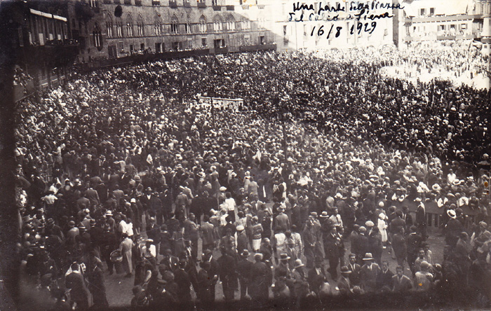

|
In neretto chi vinse la prova; l'ordine delle dieci Contrade segue quello dell'estrazione, ossia è riferito alla prima prova.

Il Palio fu vinto dalla Giraffa (vedi la scheda relativa)
I migliori cavalli erano quelli della Giraffa (toccato nel luglio alla Lupa), del Drago (toccato nel luglio al Nicchio), della Selva (toccato nel luglio all’Istrice) e della Civetta (toccato nel luglio al Drago). Un poco inferiori ai primi quattro, ma sempre buoni, erano quelli del Nicchio (nuovo) e del Montone (toccato nel luglio al Bruco). I peggiori toccarono al Leocorno, Onda, Lupa, Istrice.
1a PROVA – Non fu corsa a causa della pioggia, che insistente cadde da mezzogiorno fino alle 17, in modo da rendere la pista addirittura impraticabile anche per i pedoni.
2a PROVA – Dal canape partiva primo il Drago e seconda la Selva, seguiti alle spalle dalla Giraffa e dal Montone. Sotto casa Chigi la Giraffa passava prima e secondo il Montone. Per tutto il resto della corsa i posti rimasero immutati per quanto il Montone facesse ogni sforzo per arrivare la Giraffa.
Alla vincita arrivarono: Giraffa, Montone.
3a PROVA – Dal canape partiva prima la Selva, seguita da un gruppo formato da Montone, Giraffa, Onda, Drago e Civetta. A S.Martino voltavano prima Selva, secondo Montone, terza Giraffa. A Casa Sansedoni (2° giro) la Giraffa passava il Montone e quindi faceva ogni sforzo per raggiungere la Selva, che finalmente riusciva a passare al 3° giro al Casato. Fu una bellissima prova per l’impegno di vincere dimostrato da tutti i fantini. Alla vincita arrivarono: Giraffa, Selva, Montone.
Avanti questa prova ebbe luogo nei modi consueti e con l’intervento delle Contrade e di tutte le autorità la tradizionale offerta del cero votivo alla “Madonna del Voto”.
Grandissima fu la quantità di cera offerta dalle parrocchie di città e campagna.
4a PROVA – Dal canape partiva nettamente prima la Giraffa seguita dal Leocorno e dal Montone, che a S.Martino entrava secondo. Alla pianata il Montone trattenne il cavallo ed allora entrò secondo un gruppo composta da Selva, Drago e Nicchio. Dopo una bella gara, alla Fonte (2° giro) il Nicchio entrava secondo, e per tutto il resto della corsa fece, ma inutilmente, ogni sforzo per raggiungere la Giraffa; onde alla vincita arrivarono: Giraffa, Nicchio, Drago, Civetta. La Lupa cadde con il cavallo al 2° giro a S.Martino.
PROVA GENERALE – Dopo l’estrazione della consueta tombola a beneficio del Magistrato delle Contrade (fondo per il rinnuovamento degli storici costumi) e davanti ad un pubblico numerosissimo fu corsa questa prova che riuscì poco interessante, perché si può dire che i fantini, come partirono dal canape, così arrivarono alla vincita, e cioè: Giraffa, Drago, Selva, Nicchio, Civetta, Onda, Leocorno, Istrice, Montone.
PROVACCIA – Dopo una discreta gara durante il 1° giro, questa prova fu come al solito priva di qualunque interesse.
Vinse la Civetta.
Corsero gli stessi fantini che per il Palio.

15 agosto 1929: cartolina della Prova Generale prima della corsa


|